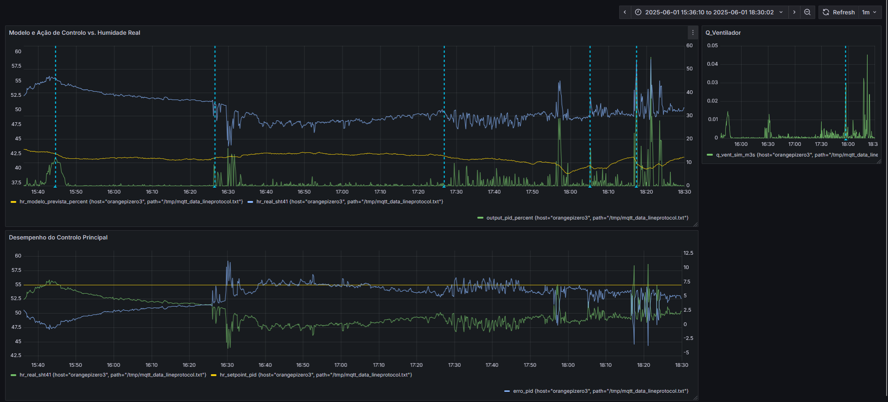

Sistema Inteligente de Controlo de Qualidade do Ar Interior (IAQ)¶
Da Monitoriza√ß√£o Passiva ao Controlo Ativo¶
Uma das poucas lições positivas que a pandemia de Covid-19 nos deixou foi a perceção de que existem riscos invisíveis à nossa saúde dentro dos espaços fechados. Muitos poluentes e substâncias contaminantes estão presentes nos ambientes interiores sem que os nossos sentidos – como o olfato, o paladar ou a visão – nos possam alertar para o perigo.
É aqui que entram os monitores de qualidade do ar interior (IAQ). Estes dispositivos detetam a presença de poluentes e fornecem dados objetivos sobre os níveis de contaminação, permitindo-nos agir antes que se tornem um risco real. Quanto mais informação tivermos, mais conscientes e eficazes serão as nossas decisões para manter um ambiente saudável e seguro nas nossas casas.
Inicialmente, o objetivo era apenas visualizar os dados de qualidade do ar. No entanto, depois de uma UC de Controlo Digital, o objetivo final do projeto tornou-se criar um sistema que não só monitoriza, mas que age autonomamente para corrigir as condições ambientais, transformando um monitor passivo num controlador ativo e inteligente.
Parâmetros Mais Importantes em IAQ¶
Há vários parâmetros que convém medir, mas os principais são:
Temperatura e Humidade¶
Conhecer os valores de temperatura e humidade de um espaço ajuda a identificar condições que favorecem o crescimento de bactérias e bolor. Ambientes muito húmidos aumentam esse risco. Alguns dispositivos também calculam o ponto de orvalho – a temperatura na qual o ar já não consegue reter mais vapor de água, levando à condensação.
CO2 (Di√≥xido de Carbono)¶
O CO2 é um composto químico que os humanos libertam ao respirar. Níveis elevados podem causar fadiga, falta de concentração e redução da produtividade. Monitorizar os níveis de CO2 permite avaliar a qualidade da ventilação de um espaço e saber quando é necessário arejar.
Particulate Matter (PM)¶
As partículas em suspensão (PM) são uma mistura de partículas sólidas e líquidas tão pequenas que podem ser inaladas, afetando a saúde respiratória. São originadas por poeira, fumo, poluição, entre outros.
- PM10 – Partículas com diâmetro inferior a 10 micrómetros.
- PM2.5 – Partículas com diâmetro inferior a 2.5 micrómetros, consideradas as mais perigosas para a saúde.
Para comparação, um fio de cabelo humano tem aproximadamente 70 micrómetros de diâmetro.
Constru√ß√£o do Sistema de Monitoriza√ß√£o¶
Hardware¶
- ESP32-C6: Dispositivo responsável pela recolha de dados e pelo envio de comandos ao ar condicionado.
- SHT41 / Senseair S8 / Plantower PMS2.5: Conjunto de sensores de alta precisão para medição de temperatura, humidade, CO2 e partículas em suspensão.
- Orange Pi: Servidor central do sistema. É um computador de placa única (SBC) de baixo consumo que corre 24/7 e aloja toda a infraestrutura de dados (MQTT Broker, InfluxDB, Telegraf, Grafana), além de ser responsável pelo processamento e armazenamento do histórico.
Implementa√ß√£o¶
A infraestrutura de dados foi projetada para ser robusta e escalável, com uma clara separação de funções entre o nó sensor e o servidor central. Todos os serviços de back-end correm num Orange Pi, garantindo operação contínua e baixo consumo energético.
O fluxo de dados é o seguinte:
- O ESP32 recolhe os dados dos sensores e publica-os em tópicos específicos num Broker MQTT (Mosquitto) que corre no Orange Pi.
- O Telegraf, também no Orange Pi, subscreve a estes tópicos, formata os dados e envia-os para a base de dados.
- O InfluxDB é a base de dados de séries temporais escolhida para armazenar eficientemente todas as medições históricas.
- Finalmente, o Grafana serve como a interface de visualização. Conectado ao InfluxDB, permite a criação de dashboards dinâmicos para monitorização em tempo real e análise de tendências históricas.
üëâ Clique aqui para ver o guia t√©cnico detalhado de configura√ß√£o do ambiente
Configurar o ESP32-C6¶
O ESP32-C6 vem sem ESP IDF instalado, então é necessário flashar o firmware antes de começar.
1. Instalar o esptool
Antes de tudo, precisamos do esptool, que serve para interagir com microcontroladores ESP. Como já tenho Python instalado, basta abrir o cmd e executar:
pip install esptool
2. Ligar o ESP32-C6 ao PC
A parte mais complicada... conectar o ESP32-C6 ao PC usando um cabo USB-C para USB-A üòÜ.
3. Instalar os drivers USB to UART
Para que o ESP32-C6 seja reconhecido corretamente, precisamos dos USB to UART Bridge VCP Drivers.
- O download pode ser feito diretamente em Silicon Labs.
- Após o download, extrair os ficheiros e localizar
silabser.inf. - Clicar com o botão direito e selecionar Instalar.
Agora, no Device Manager, o dispositivo deve aparecer como Silicon Labs CP210x USB to UART Bridge (COMx).
Tomar nota do número da porta COM atribuída (no meu caso, COM3).
4. Limpar a flash do ESP32-C6
Antes de instalar o firmware, convém limpar a memória do ESP para evitar problemas. No terminal, correr: python -m esptool --port COM3 erase_flash
Se tudo correr bem, deve aparecer a mensagem: Chip erase completed successfully.
5. Instalar o ESP-IDF
Podemos fazer download da versão mais recente para Windows do ESP-IDF para o ESP32-C6 neste link.
Durante o processo de instalação, selecionei a opção de criar atalhos no ambiente de trabalho, facilitando o acesso ao ESP-IDF Command Prompt e ao IDE.
6. Testar com Hello World
Depois de instalado, podemos verificar se tudo está a funcionar corretamente com um pequeno teste:
- Abir o ESP-IDF CMD e navegar até ao exemplo já incluído de Hello World:
cd %IDF_PATH%\examples\get-started\hello_world - Definir o target para a nossa board ESP32-C6:
idf.py set-target esp32c6 - Fazer build do firmware:
idf.py build - Flashar o firmware para a board:
idf.py -p COM3 flash - Confirmar que está a imprimir Hello World, visualizando o output do serial monitor:
idf.py -p COM3 monitor
Liga√ß√µes¶
Como referência para as ligações, utilizo esta imagem da board que estou a usar:

Conforme mencionado na secção de hardware, os sensores comunicam da seguinte forma:
- Senseair S8 e Plantower PMS2.5 → UART
- SHT41 → I2C
Pipeline de Dados¶
Para armazenar e visualizar os dados dos sensores, utilizei o InfluxDB, o Mosquitto MQTT Broker e o Telegraf para integrar os serviços.
1. Instalar e configurar o InfluxDB
- Fazer download da versão mais recente do InfluxDB v2 no site oficial.
- Abrir o PowerShell em modo Administrador e navegar até a pasta de Downloads.
- Executar o seguinte comando para extrair os ficheiros:
Expand-Archive .\influxdb2-2.7.11-windows.zip -DestinationPath 'C:\Program Files\InfluxData' - Clicar com o botão direito no .exe, copiar o caminho completo e abrir o CMD.
- Colar o caminho copiado e pressionar Enter.
O WebUI do InfluxDB deve abrir em http://localhost:8086.
Criar uma conta e seguir as instruções iniciais.
2. Instalar e configurar o Mosquitto MQTT Broker
- Fazer download do Mosquitto no site oficial.
- Após a instalação, abrir o CMD, navegar até a pasta de instalação e iniciar o serviço com:
mosquitto
Testar a comunicação MQTT
Abrir dois CMDs:
-
CMD 1 (para subscrever a um tópico):
"C:\Program Files\mosquitto\mosquitto_sub.exe" -h 127.0.0.1 -t test/topic -
CMD 2 (para publicar uma mensagem no tópico):
"C:\Program Files\mosquitto\mosquitto_pub.exe" -h 127.0.0.1 -t test/topic -m "Hello from Mosquitto"
Se a mensagem "Hello from Mosquitto" aparecer no primeiro terminal, a comunicação MQTT está a funcionar corretamente.
Agora, precisamos de conectar o Mosquitto ao InfluxDB através do Telegraf e do MQTT Consumer.
3. Instalar e configurar o Telegraf
- Fazer download do Telegraf no site oficial.
- No PowerShell (modo Administrador), executar:
wget https://dl.influxdata.com/telegraf/releases/telegraf-1.34.0_windows_amd64.zip -UseBasicParsing -OutFile telegraf-1.34.0_windows_amd64.zip - Após o download, extrair os ficheiros:
Expand-Archive .\telegraf-1.34.0_windows_amd64.zip -DestinationPath 'C:\Program Files\InfluxData\telegraf'
4. Configurar o Telegraf para consumir MQTT
- No WebUI do InfluxDB, criar um Telegraf Configuration File:
- Escolher o bucket Sensores.
- Selecionar o plugin MQTT Consumer na Plugin Library.
-
Adicionar os seguintes inputs:
[[inputs.mqtt_consumer]] servers = ["tcp://127.0.0.1:1883"] topics = [ "sensores/sht41/temperature", "sensores/sht41/humidity", "sensores/gcja5/pm1", "sensores/gcja5/pm2.5", "sensores/gcja5/pm10", "sensores/sensair_s8/co2" ] data_format = "influx" -
Adicionar o Token de Autenticação conforme indicado no WebUI.
5. Testar a configuração
Abrir dois CMDs:
-
CMD 1 (para monitorizar os dados recebidos pelo Telegraf):
telegraf --config http://localhost:8086/api/v2/telegrafs/0e96aec27fc2a000 --debug -
CMD 2 (para enviar dados de teste via Mosquitto):
mosquitto_pub -h 127.0.0.1 -t sensores/sht41/temperature -m "temperature,location=office value=25.3"
Se tudo estiver configurado corretamente, o terminal deve exibir a mensagem de sucesso:
[outputs.influxdb_v2] Wrote batch of 1 metrics in 5.0302ms
6. Visualizar os dados no InfluxDB
- Aceder ao WebUI do InfluxDB.
- Ir a Data Explorer e abrir o Script Editor.
- Executar a seguinte query para visualizar os dados:
from(bucket: "Sensores") |> range(start: -1h) |> filter(fn: (r) => r._measurement == "temperature" or r._measurement == "humidity")
Os valores dos sensores aparecem no gráfico como desejado.
Desenvolvimento e Simula√ß√£o de um Controlador PID de Humidade¶
Para dar inteligência ao sistema, foi desenvolvido um controlador Proporcional-Integral-Derivativo (PID) no ESP32. Antes de o aplicar a um atuador físico, a sua performance foi validada rigorosamente através de uma metodologia de simulação em duas fases.
Análise em Malha Aberta (Est√≠mulo Real)¶
Primeiramente, para validar a reatividade do controlador, o sistema operou em malha aberta. Nesta configuração, o PID recebia a humidade medida pelo sensor (SHT41) como input. A sua saída, no entanto, controlava um atuador simulado e não influenciava o ambiente físico. O objetivo era confirmar que o algoritmo conseguia detetar corretamente o erro em relação ao setpoint e gerar uma ação de controlo proporcional e imediata, como se pode observar na resposta do sistema a perturbações reais. 
Análise em Malha Fechada (Simula√ß√£o Pura)¶
Posteriormente, o sistema foi testado numa configuração de malha fechada pura. Aqui, o controlador foi completamente isolado do ambiente real: o seu input de erro era calculado com base na saída do modelo matemático de humidade (hr_modelo) do ciclo anterior. Esta abordagem "controlador + modelo" permitiu a sintonia fina dos ganhos do PID (Kp, Ki, Kd) e a análise detalhada da sua performance (tempo de resposta, overshoot e estabilidade) de forma isolada e repetível.
O Grafana foi uma ferramenta crucial durante a fase de desenvolvimento do controlador PID. Os dashboards permitiram visualizar em tempo real a resposta do sistema, facilitando muito a sintonia dos ganhos (Kp, Ki, Kd) e a validação do algoritmo em simulações de malha aberta e fechada. Esta validação em duas etapas provou que o algoritmo cumpre o objetivo então decidi avançar para a fase de implementação com um atuador real. Todo o trabalho de desenvolvimento e análise foi documentado em detalhe.
O relatório elaborado pode ser consultado aqui: ➡️ Relatório de Análise do Controlador PID (PDF)
O código-fonte completo da simulação está disponível no GitHub: ➡️ Ver o Código no GitHub
A Implementa√ß√£o Real - Controlo de um Ar Condicionado via Wi-Fi¶
O próximo passo lógico é aplicar o controlador PID a um atuador real. A escolha recaiu sobre o controlo de um ar condicionado Gree (Modelo GWH09AGA-K6DNA1A) que possuo no quarto. Em vez de usar um emissor de IR, a abordagem escolhida foi a comunicação via Wi-Fi, aproveitando bibliotecas existentes como a Gree-Esp. Esta abordagem é bastante superior pois permite um controlo bidirecional, onde o sistema pode não só enviar comandos, mas também verificar o estado atual do AC.
Estrat√©gia de Controlo PID Avan√ßada¶
Inicialmente a ideia era usar uma estratégia de PWM de ciclo lento (ligar/desligar o AC). No entanto, esta abordagem é ineficiente e potencialmente prejudicial para compressores de ar condicionado modernos do tipo Inverter, que são desenhados para modular a sua velocidade e não para ciclos frequentes de ON/OFF.
Por isso, a solução desenvolvida é uma estratégia de controlo multi-nível que traduz a saída do PID (0-100%) em diferentes "níveis de agressão", respeitando as limitações do hardware e otimizando a eficiência:
-
Ação Suave (Saída PID 1-40%): O AC é ativado no modo Dry (desumidificação) com a ventoinha em velocidade baixa. Ideal para correções pequenas e manutenção contínua da humidade.
-
Ação Rápida (Saída PID 41-80%): A velocidade da ventoinha é aumentada para High no modo Dry, processando um maior volume de ar para correções mais significativas.
-
Ação Máxima (Saída PID 81-100%): Para combater grandes e súbitas subidas de humidade, o sistema ativa o modo Cool (arrefecer) com uma temperatura alvo baixa (ex: 18°C) e a ventoinha em Turbo. Isto força o compressor à sua máxima capacidade, resultando na desumidificação mais rápida possível.
Esta abordagem mais inteligente garante um controlo preciso, maximiza o conforto e a eficiência energética, e prolonga a vida útil do equipamento.
üöß Work in Progress üöß